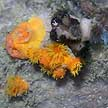
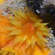
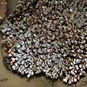
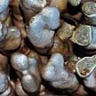

|
|
|
|
|
|
| Colony
10-12cm, bushy with short tentatcles. Tiny corallites. Tiny polyps
with a short body column and short blunt tentacles with white or blue
tips. Colours yellow or brown with a white or blue tinge. Commonly
seen on our Southern shores. |
Colonies
15cm across, small branching bush-like, some with an encrusting base.
Monticules (hard bits sticking out) generally conical. Colour baby
blue. Rarely seen, on our Southern shores. |
Colonies
10-12cm, branching with stumpy branches. Corallites tiny, shallow
and hexagonal. Polyps tiny with short tentacles. Colours brown, yellow,
green, bluish and purplish. Commonly seen on our Southern shores. |
Colony
15-20cm. Short and thick branches, tips are white and lack polyps.
Corallites tiny with no ridges between them. Polyps are tiny. Colours
beige or brown, sometimes blue or purplish. Commonly seen on our Southern shores. |
Colony
15-20cm, may be branching or encrusting. Short and thick branches,
tips are white and lack polyps. Corallites tiny with large ridges
between them. Polyps are tiny. Colours beige or brown, sometimes purplish.
Sometimes seen on our Southern shores.
|
| |
|
|
|
|
|
|
|
|
|
|
| Colonies
15-20cm, squat bush. Branches short, thick stumpy, don't interlock.
Polyps are tiny. Axial corallite circular and very prominent. Radial
corallites smoothly rounded and form a rosette. Seen on
our Southern shores. |
Colonies
15-20cm, bush. Branches tapering, don't interlock. Polyps are tiny.
Axial corallite circular and large. Radial corallites smoothly tubular.
Rarely seen, on our Southern shores.
|
Colonies 15-20cm, sparse bush. Branches thick, tapering and branching
at the tips thus resembling deer horns. Branches don't interlock.
Polyps are tiny. Axial corallite is large and cylindrical. Radial
corallites smoothly tubular and form a rosette. Rarely seen, on our
Southern shores.
|
Colonies 15-20cm, elegant bush. Branches long, neat and tapering,
don't interlock. Polyps are tiny. Axial corallite prominently large.
Radial corallites smoothly rounded or tubular, regularly but not
closely spaced. When extended, the long polyp tentacles give the
colony a hairy look. Seen on our Southern shores.
|
Colonies
15-20cm, bushy. Branches cylindrical, don't interlock. Polyps are
tiny. Axial corallite large. Radial corallites have sharp edges
and form a rosette, closely packed so the branch resembles a pine
cone. Seen on our Southern shores.
|
| |
|
|
|
|
|
|
|
|
|


Cave coral
Tubastrea sp. |
| Colonies
15-300cm. Boulder-shaped with short, crinkled branches. Tiny corallites
surface with a sandpaper-like texture. With the tentacles extended,
the surface has a furry look. Colours include green, blue to yellow,
brown and pinkish. Commonly seen on many of our Southern shores. |
|
|
|
Colony
small (2-4cm) with a few large polyps arranged like a bouquet of flowers.
Corallites long and tubular. Polyps large, fleshy with long tapered
tentacles. Orange-yellow or brown. Rarely seen on our shores. |


Blue coral
Heliopora coerulea |
|
|
|
|
| Colonies
15-30cm, branching with stumpy branches. Internal skeleton is blue
but on the outside, they are usually brown. Polyps tiny (about 0.5cm)
with 8 tentacles with fine branches. They are soft corals although
they have a hard skeleton. Commonly seen on many of our shores. |
5-8cm long with large polyps (1cm) in capsules along the side branches.
White, beige, orange. On boulders, jetties. Commonly seen on some
of our Northern shores. |
50cm-1m.
Colony bushy, long stems not frequently branched. Cylindrical, thick
(1cm) fleshy and leathery, with a wire-like central support sometimes
exposed at the tips. Dusky pinkish beige. On coral reefs. Often
seen on our Southern shores.
|
10-15cm.
Colony with sparse branches, that emerge in a U-shape. Cylindrical
stems with large white polyps all around. Orange. On coral rubble,
rocks. Commonly seen on some of our Northern shores. |
|